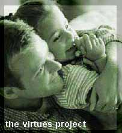

| SpirITuality
Contributed
by: Brian Co
The
Virtues Project
is an initiative that began in 1991 to empower
individuals and families to live by their highest values.
It recognizes that education is the key to transformation,
but it insists that education must touch the human spirit.
"Cultivate
VIRTUE in YOURSELF and VIRTUE Will be REAL"
"Virtues are the essence of the human spirit and the
content of our character. Virtues are what’s good about
us"
– Janie, 6 yrs. old.
What Are The Virtues?
Assertiveness
Being assertive means being positive and confident. You are
aware that you are a worthy person with your own special gifts.
You think for yourself and express your own ideas. You know
what you stand for and what you won’t stand for. You
expect respect.
Caring
Caring is giving love and attention to people and things that
matter to you. When you care about people, you help them.
You do a careful job, giving your very best effort. You treat
people and things gently and respectfully. Caring makes the
world a safer place.
View the complete list [Virtues
List - pdf]
The
Seven Deadly Sins and the Virtues Against It
Contributed
by: Albert Gavino
7 Sins |
Virtue
which it sins against |
Brief description
|
Pride
|
Humility |
Seeing ourselves as we are and not
comparing ourselves to others is humility.
Pride and vanity are competitive. If someone else's
pride really bothers you, you have a lot of pride. |
Avarice/Greed
|
Generosity |
This is about more than money. Generosity
means letting others get the credit or praise. It is
giving without having expectations of the other person.
Greed wants to get its "fair share" or a bit
more. |
Envy
|
Love |
"Love is patient,
love is kind…" Love
actively seeks the good of others for their sake. Envy
resents the good others receive or even might receive.
Envy is almost indistinguishable from pride at times. |
Wrath/Anger
|
Kindness |
Kindness means taking
the tender approach, with patience and compassion. Anger
is often our first reaction to the problems of others.
Impatience with the faults of others is related to this. |
Lust
|
Self
Control |
Self control and
self mastery prevent pleasure from killing the soul
by suffocation. Legitimate pleasures are controlled
in the same way an athlete's muscles are: for maximum
efficiency without damage. Lust is the self-destructive
drive for pleasure out of proportion to its worth. Sex,
power, or image can be used well, but they tend to go
out of control. |
Gluttony
|
Faith
and Temperance |
Temperance accepts
the natural limits of pleasures and preserves this natural
balance. This does not pertain only to food, but to
entertainment and other legitimate goods, and even the
company of others. |
Sloth
|
Zeal |
Zeal is the energetic
response of the heart to God's commands. The other sins
work together to deaden the spiritual senses so we first
become slow to respond to God and then drift completely
into the sleep of complacency. |
MTV did a special in August 1993 on the
Seven Deadly Sins which involved
interviewing various well-known entertainers from the music
and television industry. They pretty much all agreed these
were not vices and the list was "dumb." (Sigh) Oh
well.
(Details: The MTV title was "Seven Deadly Sins:
An MTV News Special Report"; PBS showed it as
"Alive TV." First aired on MTV on August 11, 1993.
PBS first aired it on August 20, 1993.)
Source:http://www.whitestonejournal.com/seven/index.html
|